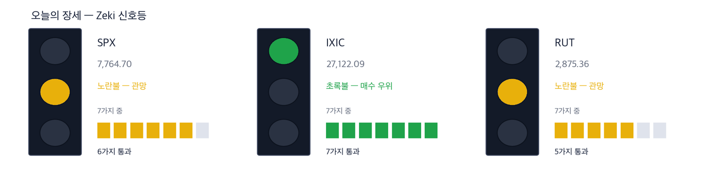
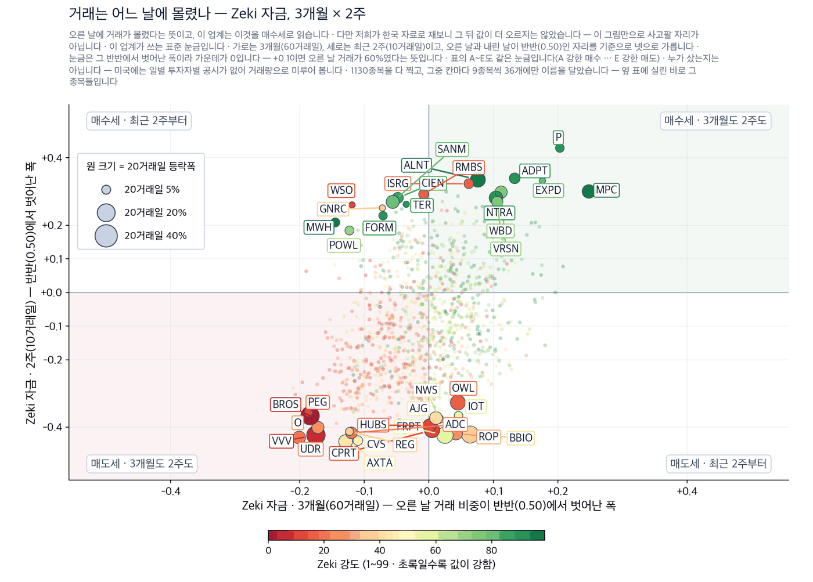

메타 11% 급등, 나스닥 최고… 유가는 나흘째 하락
2026년 9월 22일 · 값은 9월 21일 종가 기준입니다
신문에서 저희가 갖고 있지 않은 회사를 찾아, 왜 값을 할 수 있는지 숫자로 적습니다.
다우 52,049 | 나스닥 종합 27,122 | S&P 500 7,765 | 러셀 2000 2,875 | 10년 국채 4.96% | Zeki 신호등 노란불 |
Zeki 신호등은 시장이 지금 어떤 상태인지를 7가지로 재서 하나로 줄인 것입니다. 초록불은 매수 우위, 노란불은 관망, 빨간불은 매수 자제입니다. 나스닥 종합은 7가지를 모두 지나 초록불입니다. S&P 500은 6가지, 러셀 2000은 5가지에 그쳐 둘 다 노란불입니다. 세 지수를 합한 오늘 신호등은 노란불입니다.

이 그림 읽는 법
| 켜진 등 | 오늘 시장이 어떤 상태인지 알려 줍니다. 초록은 매수 우위, 노랑은 관망, 빨강은 매수 자제입니다. |
| 채워진 칸 | 7가지 조건 중 몇 가지를 만족하는지입니다. 많이 만족할수록 오르는 종목이 넓게 퍼져 있습니다. |
| 칸이 다 찼는데 노랑·빨강이면 | 다른 이유로 한 단계 낮춘 것입니다. 그림 아래에 그 이유를 적었습니다. |
대기 — 신호등이 뜻하는 자세입니다.
간밤 뉴욕에서 나스닥 종합이 2.26% 올라 27,122로 마쳤습니다. 최고 기록입니다. 메타 플랫폼스 한 종목이 11.34% 오르며 지수를 끌어올렸습니다. S&P 500은 1.49%, 다우는 0.71% 올랐습니다. 서부텍사스산 원유는 배럴당 95.8달러로 4.51% 내렸습니다. 나흘째 하락입니다. 미 국채 10년물 금리는 4.96%로 내렸습니다. (월스트리트저널 · IBD)
지금 할 일
개장 전에 정해 두실 3가지입니다.
오늘 할 일 셋
1. 나스닥만 초록불입니다. 소형주는 아직 아닙니다.
나스닥 종합은 저희가 보는 7가지를 모두 지났습니다. 러셀 2000은 5가지입니다. 오르는 자리가 대형 기술주에 몰려 있다는 뜻입니다. 소형주를 새로 담는 것은 오늘 미루시는 편이 낫습니다.
2. 메타는 행사를 하루 앞두고 값이 먼저 올랐습니다.
메타 커넥트 개발자 행사가 9월 23일 수요일 시작합니다. 발표 전에 값이 먼저 오르면 내용이 기대에 못 미칠 때 되돌아오는 폭이 큽니다. 오른 뒤에 따라 사는 자리가 아닙니다.
3. 유가가 나흘 연속 내렸습니다. 어제까지 유가 덕에 오르던 종목은 근거가 약해집니다.
브렌트유도 배럴당 100.3달러로 3.4% 내렸습니다. 두 유종이 함께 내렸으므로 만기 교체에 따른 착시가 아닙니다. 연료를 사서 쓰는 회사가 유리해지는 쪽입니다.
그래서 어떻게 하나: 오늘 새로 담을 자리는 대형 기술주 쪽이고, 크기는 평소보다 작게 잡으십시오. 지수는 최고 기록인데 러셀 2000은 5가지에 그쳤습니다.
먼저, 이번 주 경제
| 날짜 | 무엇을 보는가 | 넘으면 어떻게 되는가 |
|---|---|---|
| 9월 23일(수) | 9월 S&P 글로벌 제조업·서비스업 지수 잠정치 | 서비스업이 지금 속도를 지켰는지가 금리 기대를 바꿉니다 |
| 9월 23일(수) | 메타 커넥트 개막 | 인공지능 안경과 Muse 앱의 이용자 수가 나오면 메타의 근거가 바뀝니다 |
| 9월 24일(목) | 주간 신규 실업수당 청구 · 8월 신규 주택 판매 | 금리가 5% 가까이 머문 뒤 주택 수요가 꺾였는지를 보여 줍니다 |
| 9월 25일(금) | 8월 내구재 주문 · 9월 소비자심리 수정치 | 기업이 설비에 돈을 쓰고 있는지가 여기 먼저 나타납니다 |
왜 그런가
기사에서 찾은 종목
테마 1 — 메타 하루 11%, 대형 기술주 재평가
메타 플랫폼스가 하루에 11.34% 올랐습니다. 수요일 개막하는 커넥트 개발자 행사를 하루 앞둔 날입니다. 이 회사가 이달 초 내놓은 인공지능 비서 앱 Muse는 애플 무료 내려받기 상위권에 머물고 있습니다. 카메라가 없는 형태를 포함한 새 인공지능 안경도 발표 대상으로 거론됩니다. 메타 한 종목이 오르자 나스닥 종합이 최고 기록을 새로 썼습니다. (월스트리트저널 1면 · 비즈니스면, IBD)
정리하면 — 저희 기준 4가지 가운데 3가지를 넘었습니다. 20거래일 동안 34.80% 올랐고 Zeki 자금은 A입니다. 다만 Zeki 강도가 69로 90에 못 미칩니다. 1년으로 보면 값이 아직 시장에서 특별히 강하지 않다는 뜻입니다. 확인 신호 — 9월 21일 종가 741.25달러 위를 지키면서 하루 거래량이 50일 평균 1,813만 주를 넘는 것입니다. 철회 기준 — 커넥트 행사 뒤에 Muse 앱의 내려받기 순위가 내려가는 것입니다. 값이 아니라 이용자 수가 이 이야기의 근거입니다. |
테마 2 — 금리 하락에 반도체 선반응, 인텔 12%
인텔이 12.14%, AMD가 9.95% 올랐습니다. 마이크론은 2.77% 올라 IBD가 적어 둔 1,042.40달러 기준 위에서 마쳤습니다. 같은 날 미 국채 10년물 금리도 내렸습니다. 금리가 내리면 먼 미래의 이익으로 값을 매기는 회사가 먼저 오릅니다. 인텔과 AMD는 저희가 갖고 있지 않은 이름입니다. (IBD 9월 21일)
정리하면 — 4가지 가운데 3가지를 넘었습니다. Zeki 강도는 94로 상위 10% 안입니다. 넘지 못한 것은 Zeki 자금으로, 등급이 D입니다. 값은 올랐는데 오른 날에 거래가 몰리지는 않았다는 뜻입니다. 확인 신호 — 9월 21일 종가 121.78달러 위를 지키면서 Zeki 자금 등급이 D에서 올라오는 것입니다. 철회 기준 — 미 국채 10년물 금리가 5%를 다시 넘어서는 것입니다. 이 반등의 출발점이 금리였기 때문입니다. |
정리하면 — 4가지 가운데 3가지를 넘었습니다. Zeki 강도는 94입니다. Zeki 자금이 D여서 넷을 다 채우지 못했습니다. 3개월로 보면 22.30% 내린 자리라 되돌리는 중입니다. 확인 신호 — 하루 종가가 IBD의 1,807.38달러 위에서 마치면서 거래량이 50일 평균 1,412만 주를 넘는 것입니다. 철회 기준 — 9월 21일 종가 1,766.64달러 아래에서 한 주를 마치는 것입니다. |
테마 3 — 인공지능 서버 판매사, 월요일 새 돌파
IBD가 월요일 새로 기준을 넘은 4종목을 짚었고, 그 가운데 휴렛팩커드 엔터프라이즈를 먼저 들었습니다. 63.44달러 기준을 넘어섰습니다. 저희가 갖고 있지 않은 이름입니다. 반도체를 사는 쪽이 아니라 그것을 조립해 파는 쪽입니다. (IBD 9월 21일)
정리하면 — 저희 기준 4가지를 모두 넘은 오늘 단 하나의 이름입니다. Zeki 강도 93, Zeki 자금 A입니다. 9월 21일 종가는 1년 고점보다 0.5% 낮을 뿐입니다. 확인 신호 — 9월 21일 종가 61.75달러 위를 지키면서 하루 거래량이 50일 평균 2,065만 주를 넘는 것입니다. 철회 기준 — IBD가 적어 둔 63.44달러 아래로 다시 내려와 그 자리를 지키지 못하는 것입니다. |
테마 4 — 810억 달러 합병 승인… 사는 쪽과 팔리는 쪽 반대로
파라마운트가 주 법무장관들과의 반독점 소송을 합의로 끝냈습니다. 워너브러더스디스커버리를 810억 달러에 사는 길이 열렸습니다. 합의문은 데이비드 엘리슨 최고경영자에게 회사 구조를 바꾸라고 요구하지 않았고, 약속을 지키지 않을 때 물리는 벌칙만 두었습니다. 같은 소식에 사는 쪽과 팔리는 쪽의 값이 반대로 움직였습니다. 둘 다 저희가 갖고 있지 않은 이름입니다. (월스트리트저널 1면)
정리하면 — 4가지 가운데 3가지를 넘었습니다. Zeki 자금은 A입니다. Zeki 강도가 73이라 90에 못 미칩니다. 이 값은 합병이 끝나는지에 달려 있고, 회사 실적에 달려 있지 않습니다. 확인 신호 — 9월 21일 종가 30.80달러 위를 지키는 것입니다. 이 값이 1년 고점입니다. 철회 기준 — 연방 심사에서 새 조건이 붙거나 합의 이행에 문제가 생기는 것입니다. |
정리하면 — 4가지 가운데 1가지만 넘었습니다. Zeki 강도는 16입니다. 같은 기사가 한쪽에는 근거가 되고 다른 쪽에는 부담이 됩니다. 저희는 이 이름을 오늘 근거로 올리지 않습니다. 확인 신호 — 9월 21일 종가 9.91달러 위에서 한 주를 마치는 것입니다. 철회 기준 — 이미 넘지 못했습니다. 20거래일 동안 4.25% 내렸습니다. |
오늘 제외한 테마 — 무인 중장비
캐터필러가 사람이 타지 않는 매립장 장비를 내놓았습니다. 엔비디아는 스웨덴 아인라이드의 무인 트럭에 연산 장치와 인공지능 도구를 대기로 했습니다. 아인라이드는 2028년까지 최대 2,000대를 내다봅니다. 기사는 컸는데 값이 따라오지 않았습니다. 캐터필러는 20거래일 동안 1.38% 내렸고 Zeki 강도가 70입니다. 매립장을 운영하는 웨이스트 매니지먼트와 리퍼블릭 서비시스는 강도가 26과 37이고 Zeki 자금이 둘 다 E입니다. 그래서 이 테마는 오늘 제외합니다. 종목을 만들어 내지 않습니다. (월스트리트저널 비즈니스면)
같은 이유로 뺀 것 하나 더
노보 노디스크 최고경영자가 새 약 계획을 내놓았는데 값은 7.96% 내렸습니다. 20거래일로는 14.85% 내렸고 Zeki 강도는 14입니다. 계획은 나왔고 값은 반대로 갔습니다. (월스트리트저널 비즈니스면)
오늘 찾은 것, 한 장으로
오늘 사야 한다면 — 근거 확실 1곳: 휴렛팩커드 엔터프라이즈(HPE)
| 종목 | ①20거래일 상승 | ②강도 90↑ | ③자금 3개월 A~B | ④2주째 유지 | 충족 | 근거의 무게 |
|---|---|---|---|---|---|---|
| 메타 플랫폼스(META) | O | X | O | O | 3/4 | 확인 필요 |
| 인텔(INTC) | O | O | X | O | 3/4 | 근거 있음 |
| 샌디스크(SNDK) | O | O | X | O | 3/4 | 근거 있음 |
| 휴렛팩커드 엔터프라이즈(HPE) | O | O | O | O | 4/4 | 근거 확실 |
| 워너브러더스디스커버리(WBD) | O | X | O | O | 3/4 | 확인 필요 |
| 파라마운트 스카이댄스(PSKY) | X | X | O | X | 1/4 | 확인 필요 |
네 칸은 ①20거래일 상승 ②Zeki 강도 90 이상 ③Zeki 자금 3개월 A 또는 B ④최근 2주에 값이 약해지지 않았는가입니다. O의 수가 등급을 정합니다. 6곳 가운데 4가지를 모두 넘은 곳은 1곳입니다.
그래서 어떻게 하나: 오늘 4가지를 다 넘은 곳은 휴렛팩커드 엔터프라이즈 1곳뿐입니다. 메타·인텔·샌디스크·워너브러더스디스커버리는 한 가지가 비어 있고, 파라마운트 스카이댄스는 3가지가 비어 있습니다.
돈은 어디로 갔나
하루 2,000만달러 이상 거래되는 1,130종목을 확인했습니다.
이것이 무엇이고 무엇이 아닌지 먼저 밝힙니다. 미국에는 한국 같은 주체별 일별 공시가 없습니다. 외국인·기관이 몇 주를 샀는지 알 수 없습니다. 잴 수 있는 것은 오른 날의 거래량과 내린 날의 거래량을 최근 13주에 걸쳐 비교한 값입니다. 0.50을 넘으면 오르는 날에 더 많이 거래됐다는 뜻입니다. 기관이 모으는지 보는 표준 방법이지만, 집계가 아니라 추정입니다.
이것이 무엇이고 무엇이 아닌지 먼저 밝힙니다. 미국에는 한국 같은 주체별 일별 공시가 없습니다. 외국인·기관이 몇 주를 샀는지 알 수 없습니다. 잴 수 있는 것은 오른 날의 거래량과 내린 날의 거래량을 최근 13주에 걸쳐 비교한 값입니다. 0.50을 넘으면 오르는 날에 더 많이 거래됐다는 뜻입니다. 기관이 모으는지 보는 표준 방법이지만, 집계가 아니라 추정입니다.
매집이 가장 두드러진 5종목
| 종목 | 상승일 대비 거래량 | 20거래일 | 기준일 |
|---|---|---|---|
| MPC | 0.75 | +11.5% | 09-21 |
| TEAM | 0.71 | +13.9% | 09-21 |
| P | 0.70 | +4.7% | 09-21 |
| RNG | 0.70 | +15.4% | 09-21 |
| VEEV | 0.68 | +5.4% | 09-21 |
분산이 가장 두드러진 5종목
| 종목 | 상승일 대비 거래량 | 20거래일 | 기준일 |
|---|---|---|---|
| KIM | 0.29 | -6.2% | 09-21 |
| BHF | 0.29 | -4.6% | 09-21 |
| UDR | 0.30 | -10.3% | 09-21 |
| ROL | 0.30 | -12.4% | 09-21 |
| DY | 0.31 | -25.8% | 09-21 |
값이 흐름을 확인해 준 종목 — DY는 0.31이고 20거래일 동안 25.8% 내렸습니다. 거래량이 말하는 것과 값이 말하는 것이 같습니다.

이 그림 읽는 법
| 이 그림이 말하지 않는 것 | 같은 기간의 거래와 등락을 나란히 놓은 것입니다. 앞날을 맞히지는 못합니다 — 저희가 미국 21년치로 재 보니 네 칸의 그 뒤 성적이 서로 구별되지 않았습니다. 가장 높은 등급과 가장 낮은 등급의 차이도 0.03%p로 사실상 없었습니다. 그래서 이 그림은 지금 어디에 있는지를 보는 자리이지 사고팔 자리가 아닙니다. 그리고 누가 샀는지는 알 수 없습니다 — 미국에는 투자자별 일별 공시가 없어 거래량으로 미루어 볼 뿐입니다. |
| 네 칸 | 가로와 세로 두 값이 각각 기준선을 넘었는지로 넷을 가릅니다. 오른쪽 위는 둘 다 넘은 곳, 왼쪽 아래는 둘 다 못 넘은 곳, 나머지 두 칸은 한쪽만 넘은 곳입니다. 칸 이름이 그 칸에 든 종목의 상태를 한 문장으로 적어 둔 것입니다. |
| 가운데 두 칸 | 두 기간을 비교하는 자리입니다. 글자 A~E가 있으면 이 업계가 쓰는 표준 등급으로, A는 강한 매수, B는 매수 우세, C는 매수와 매도가 반반, D는 매도 우세, E는 강한 매도를 뜻합니다(전체를 다섯으로 나눈 순위라 A가 상위 20%입니다). 숫자가 있으면 그 기간에 산 양에서 판 양을 뺀 것입니다. |
| 칸마다 9종목 | 그 칸에서 움직임이 가장 큰 순서입니다. 나머지는 칸 아래에 몇 종목인지만 적었습니다. 옆 산점도가 이름을 다는 종목이 바로 이 9종목씩입니다. |
| 20거래일 막대 | 0을 가운데 두고 오른쪽이 상승, 왼쪽이 하락입니다. 길이는 같은 칸 안에서만 서로 비교하십시오 — 칸마다 기준이 다릅니다. |
| Zeki 강도 | 1~99 순위입니다. 막대가 길수록, 초록에 가까울수록 그 종목의 주가가 시장에서 강합니다. |

이 그림 읽는 법
| 점 하나 | 종목 하나입니다. 가로·세로 위치가 두 값을 그대로 나타내고, 가운데 가로·세로로 그어진 두 선이 기준선입니다. 네 귀퉁이의 이름표가 그 칸의 뜻입니다. |
| 점 크기 | 최근 20거래일 등락폭입니다. 오르든 내리든 크게 움직였으면 큰 점입니다. |
| 점 색 | Zeki 강도입니다. 초록일수록 주가가 시장에서 강합니다. |
| 30종목만 | 이름이 겹치면 못 읽기 때문입니다. 가운데 몰린 나머지는 움직임이 거의 없는 종목들이라 뺐습니다. |
찾아낸 종목에 자금이 따라왔는가
| 종목 | Zeki 자금 3개월 | 넘어야 할 거래량 (50일 평균) | 9월 21일에 넘었나 | 최근 2주 |
|---|---|---|---|---|
| 메타 플랫폼스(META) | A | 18,131,088 | 넘었습니다 2.7× | +20.18% |
| 인텔(INTC) | D | 109,768,652 | 넘었습니다 1.7× | +27.12% |
| 샌디스크(SNDK) | D | 14,123,846 | 못 넘었습니다 0.7× | +1.53% |
| 휴렛팩커드 엔터프라이즈(HPE) | A | 20,651,060 | 못 넘었습니다 1.0× | +18.75% |
| 워너브러더스디스커버리(WBD) | A | 26,157,552 | 넘었습니다 8.9× | +9.03% |
| 파라마운트 스카이댄스(PSKY) | B | 14,162,696 | 넘었습니다 4.7× | -8.75% |
Zeki 자금이 A나 B이면 오른 날에 거래가 몰렸다는 뜻입니다. 인텔과 샌디스크만 D입니다. 값은 올랐는데 거래는 아직 따라오지 않았습니다. 네 번째 칸은 9월 21일 하루 거래량이 50일 평균을 넘었는지입니다. 넘은 날이 확인 신호입니다.
장중 체크리스트
미 국채 10년물 금리 4.96%. 5%를 다시 넘으면 값이 비싼 종목부터 내립니다.
서부텍사스산 원유 95.8달러. 여기서 더 내리면 연료를 사서 쓰는 회사가 유리해집니다.
메타 9월 21일 종가 741.25달러. 이 아래에서 마치면 행사 전 상승분이 빠지는 중입니다.
오늘 종목을 어떻게 읽으실지
Zeki 강도는 저희가 보는 미국 상장 1,100여 종목 가운데 값이 몇 등인지를 1에서 99로 매긴 것입니다. 90이 넘으면 상위 10% 안에 든다는 뜻입니다. Zeki 자금은 오른 날에 거래가 얼마나 몰렸는지를 A에서 E로 매긴 것입니다. 저희가 다른 시장 자료로 재 보니 이 등급이 다음 달 값을 맞히지는 못했습니다. 그래서 마지막 관문으로만 씁니다. 먼저 이야기가 맞고 값이 따라왔는지를 보고, 그다음에 거래까지 따라왔는지를 봅니다.
이번 주에 확인할 것은 수요일 아침 S&P 글로벌 지수 잠정치와 같은 날 열리는 메타 커넥트입니다. 목요일에는 신규 실업수당 청구와 8월 신규 주택 판매가 나옵니다. 금요일에는 8월 내구재 주문이 나옵니다.
오늘 다이제스트는 월스트리트저널 9월 22일자 지면과 IBD 9월 21일 기사를 바탕으로 지었습니다. 월스트리트저널은 지면 목차와 각 기사의 제목·요약을 근거로 썼습니다. 값은 저희가 직접 계산했고 9월 21일 종가 기준입니다. IBD의 권장 노출 수준은 이번 회차에서 확인되지 않아 싣지 않았습니다.
본 리포트는 정보 제공 목적이며 개별 투자 자문이 아닙니다. ZekiRex™ Apex US는 1,000만 달러 규모의 모의 포트폴리오를 규칙 기반으로 운용합니다. 실제 계좌도, 주문도, 사고판 일도 없습니다. 표시된 성과에는 수수료와 세금, 매매 시 가격 미끄러짐이 반영되지 않았습니다. 종목 자료에는 상장폐지된 회사가 빠져 있습니다. 살아남은 회사만 세는 셈이라 성과가 실제보다 높게 나옵니다. 과거의 성과는 미래를 보장하지 않으며, 투자에는 원금 손실 위험이 따릅니다.
이 다이제스트는 저희가 계산한 값으로 걸러낸 종목을 싣습니다. 개별 투자 자문이 아니며 특정 종목의 매수나 매도를 권하지 않습니다. 실린 등급과 순위는 모두 저희가 계산한 것이고, 모의 포트폴리오 기준입니다. 투자에는 원금 손실 위험이 따릅니다.
This is the Rex Way, ZekiRex™